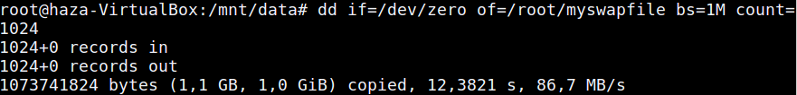

Pengertian Swap :
Swap adalah ruang pada Hardisk yang dijadikan ruang Virtual Memori (memory bayangan), yang digunakan ketika komputer membutuhkan lebih banyak memory dan space.
Fungsi Swap :
sebagai memori tambahan untuk memori fisik (RAM) dikomputer kita. Di semua system operasi (termasuk Linux) memori mempunyai fungsi sebagai tempat untuk penyimpanan sementara berbagai macam modul dan driver-driver yang dibutuhkan untuk menjalankan suatu system operasi, yang sekaligus juga digunaka untuk menjalankan aplikasi-aplikasi yang kita jalankan, kekurangan dari memori fisik adalah kapasitasnya yang relatif kecil, sehingga terkadang system terasa lambat dikarenakan penggunaan memori fisik di system telah penuh terpakai, untuk mengatasi hal tersebut maka digunakanlah suatu metode yang dikenal dengan Virtual Memori, di sistem Linux memori bayangan ini biasanya merupakan suatu partisi di hardisk yang mempunyai tipe file sistem Linux Swap, akan tetapi sebenarnya di Linux kita bisa membuat ataupun menambahkan Virtual Memori tanpa mengubah partisi di hardisk yaitu dengan menggunakan file yang mempunyai ekstensi (jenis file) misalnya contoh.swp yang akan kita gunakan sebagai Virtual Memory.
Beberapa Configure dalam RAM :
Cara membuat Swapfile :
$ sudo dd if=/dev/zero of=/root/myswapfile bs=1M count=1024
Untuk yang setelah /root itu hanya penamaan saja jadi terserah kalian ingin memberi nama apa saja.
Mengubah permission file terlebih dahulu :
$ sudo chmod 600 /root/myswapfile
Saya merubah permission terlebih dahulu dikarenakan agar Swap tidak ada yang dapat merubahnya dan dilihat orang lain.
Merubah file yang kita buat menjadi swap :
$ sudo mkswap /dev/sdb1
fungsi dari mkswap untuk merubah file menjadi swap
Mengaktifkan swap :
$ sudo swapon /root/myswapfile
itu berfungsi juga untuk mengaktifkan semua Swap kita yang ada dilinux dengan mengganti /root/myswapfile menjadi -a
Jika kita ingin menanamkan Swap kita di computer dengan cara berikut :
$ sudo nano /etc/fstab
/root/myswapfile swap swap defaults 0 0
Mengecek Swap :
$ sudo free -mt
Menghapus Swap :
$ sudo rm /root/myswapfile
Semoga berhasil mencoba kawan.jika terjadi error atau hal lain maka bisa chat dengan admin lewat medsos dibawah.